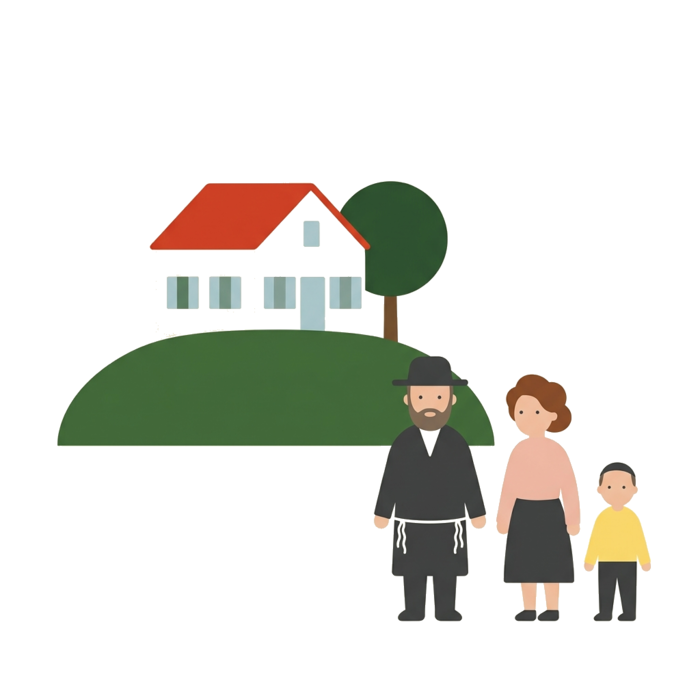
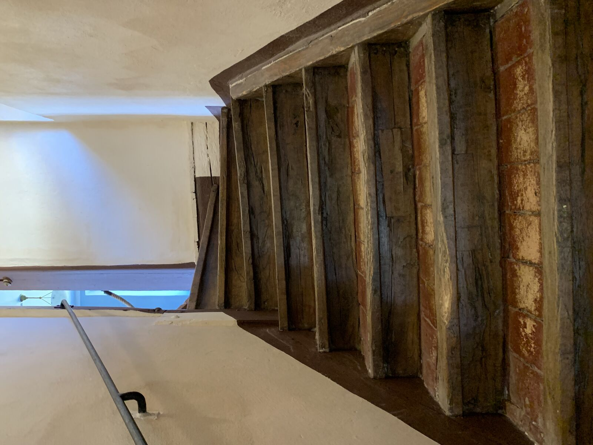
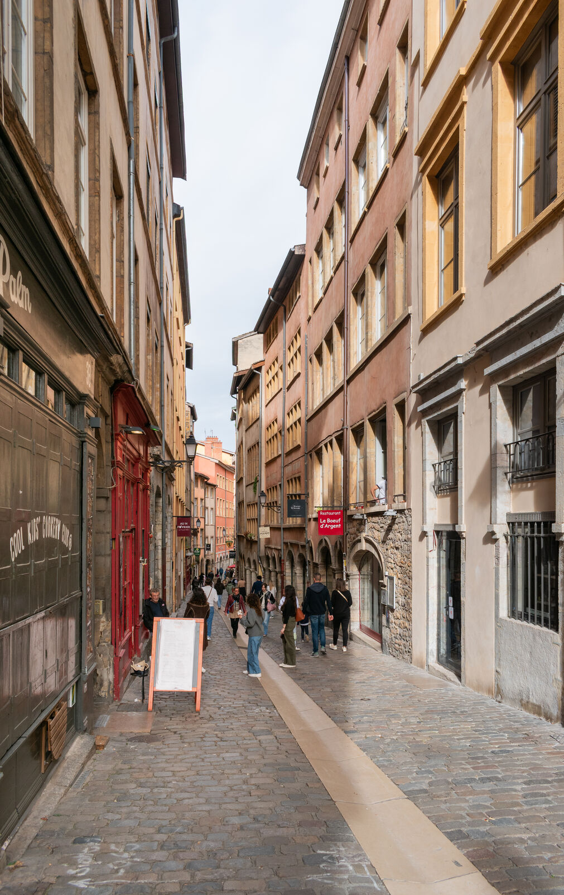
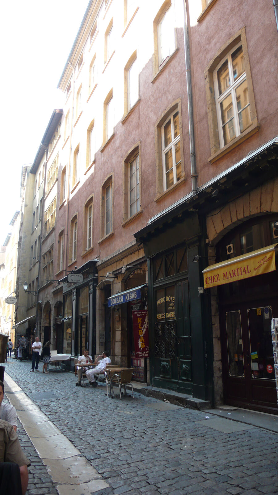

Home / Jewish Lyon guide / Summer in the Alps for Jewish families
Summer in the Alps for Jewish families
lakes, hikes and a minyan within reach
Summer in the Alps means lakes, walking and long evenings. For an observant family it also means working out where the minyan is, who feeds you on Shabbat and what is open. Three towns near Lyon have a published community: Aix-les-Bains, Annecy and Grenoble. In the high resorts, the Chabad services we found are winter only. We guide in Lyon only: no packages, no stays.
- Aix-les-Bains, Annecy, Grenoble
- Mikveh and meals, sourced
- Lyon as a base
- Checked 7 October 2026

Three towns with a published community
- Aix-les-Bains, on the lake of Le Bourget, 1 h 15 from Lyon by train. The community website ci-aixlesbains.fr lists synagogues and oratories, Shabbat and holiday times, a mikveh, groceries and butchers, restaurants and caterers. It also shows a family offering home-made meals for visitors. We could read the headings but not the addresses of the shops: ask the community office.
- Annecy, on its lake, 1 h 45 from Lyon by car. One community centre and synagogue, with a rabbinical delegate. The nearest Chabad house we found is in Annemasse, 40 minutes away.
- Grenoble, 1 h 15 from Lyon by train, at the foot of the Chartreuse and Vercors. Two synagogues and the Beth Habad that heads the Chabad network of the Alps. We publish no shop or restaurant for Grenoble: the sources we found were secondary and one listed place is marked closed.
Where to pray and ask 7
- Communauté israélite d'Aix-les-Bains contact@ci-aixlesbains.fr. Mikveh listed at the same address on mikvah.org. Home-made meals for visitors: ask the community for the contact7 rue Paul Bonna, 73100 Aix-les-BainsMap
- Centre communautaire israélite d'Annecy Rabbinical delegate Nephtaly Suissa. Mikveh listed at the same address on mikvah.org18 rue de Narvik, 74000 AnnecyMap
- Beth Habad d'Annemasse The nearest Chabad house to Annecy, near the Geneva border. Phone not published17 rue du Clos Fleury, 74100 AnnemasseMap
- Synagogue Bar Yohaï (CIG) Consistoire régional4 rue des Bains, 38000 GrenobleMap
- Grande Synagogue consistoriale (ACJG Rachi) Office open Monday and Thursday mornings11 rue André Maginot, 38000 GrenobleMap
- Beth Habad de Grenoble, Rabbi Yhia Lahiany Heads the Chabad network of the Alps: habadgrenoblealpes.com10 rue Lazare Carnot, 38000 GrenobleMap
- Synagogue de Chambéry On the road between Lyon and the Savoie valleys. Rite and rabbi not published9 impasse Chardonnet, 73000 ChambéryMap
Sources: consistoireregionaldelyon.org (Annecy, Chambéry, Grenoble), ci-aixlesbains.fr, mikvah.org, habadgrenoblealpes.com, Wikipedia (Annemasse). Not verified by phone: call before you go.
High resorts in summer: what is published
- Courchevel and Megève. The Chabad services we found are published for the winter season only. Nothing says they run in summer. Write to Rabbi Daniel Belaïch (habadalpes@yahoo.fr) before you count on one.
- Chamonix. A US operator, Kosher Outdoor Adventures, advertises a week of multi-level hiking in the Swiss, French and Italian Alps from Chamonix, with glatt kosher chef-prepared meals, a daily minyan with a Sefer Torah and Shomer Shabbat observance. Its trips are designed for adults over 50, so they do not suit a family with children. Dates are on its website. Source: kosheroutdooradventures.com.
- Evian and Lake Geneva. We found no published Jewish address for Evian. Geneva has its own community, across the border.
- Kosher summer hotels or centres in the French Alps. We name none. The directory skikosher.com lists kosher properties for the summer season in other countries, and none in France that we could read.
Hiking and Shabbat in the mountains
Summer plans fail on small things. These points help.
- Choose where you sleep before the trail. Stay within walking distance of the minyan, or of the host who feeds you.
- Cook ahead. Prepare the Friday meal and bring it, or order it before Thursday from the community. Few mountain villages have a kosher shop.
- Check candle lighting. Use Hebcal for your town. Summer candle lighting in Savoie is later than in winter, and a late hike ends on Friday afternoon at the latest.
- Write down the nearest minyan. Before you lose the network in the valley.
- Carry water and a map. Do not start a long route on Friday.
For rulings, ask your own rabbi. We give practical points only.
Lyon as your base or your first stop
- 1
Land and shop in Lyon
Buy meat, bread and dairy at Hypercacher, Lilly Market or the butchers. See Lyon, the gateway to the Alps.
- 2
Take a Lyon tour
The Jewish Lyon tour lasts 2 h 30, with the inside of the Grande Synagogue. The Stopover lasts 3 hours, for families who drive on the same day.
- 3
Add Izieu
The Maison d'Izieu day trip leaves from Lyon. Izieu is in the Ain, east of Lyon, in the direction of Savoie. Price from 990 €, on quote.
- 4
Go up, come back
Lyon works as a base for day trips by train to Grenoble, Aix-les-Bains and Chambéry. Spend Shabbat in Lyon: see Shabbat in Lyon.
The towns on the map
Tap a marker for directions.




Summer in the Alps: questions
Which Alpine town has the best-equipped Jewish community near Lyon?
Aix-les-Bains is the most documented: synagogues, a mikveh, shops, restaurants and caterers are all announced on its community website, and a family offers home-made meals for visitors.
Is there a Chabad house in Annecy?
We found none in Annecy itself. The Beth Habad of Annemasse, 40 minutes away, is the nearest. The Annecy community centre has a rabbinical delegate.
Do the Chabad services of Courchevel and Megève run in summer?
The services we found are published for winter only. Write to Rabbi Belaïch before you plan around one.
Are there kosher hotels in the French Alps in summer?
We name none, because we found no source. The skikosher.com directory does not show a French summer property that we could read.
Can we keep Shabbat while hiking?
Plan lodging near a minyan, cook before Shabbat and finish your walk well before candle lighting. For a ruling, ask your rabbi.
Can we combine Lyon with the Alps?
Yes. Land in Lyon, take a 2 h 30 city tour or the 3 hour Stopover, and add Izieu. Grenoble and Aix-les-Bains are about 1 h 15 from Lyon by train, Chambéry 1 h 20.
Keep reading
Sources: ci-aixlesbains.fr, consistoireregionaldelyon.org, habadgrenoblealpes.com, mikvah.org, synalpes.wordpress.com, kosheroutdooradventures.com, skikosher.com. Compiled by Mishpacha Tours from these sources. Checked 7 October 2026.